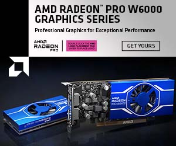

今回は、弊社が正規代理店として製品取り扱いのある、AMD社RadeonPROシリーズワークステーション向けグラフィックカードについてご紹介をいたします。

AMD RADEON PRO W6400はW6000シリーズのエントリー向けGPUカード製品であり、最新のGPUアーキテクチャーの採用にて以下の特徴があります。
①16MBのGraphics Cache（L3)メモリーを実装により、実効メモリ帯域幅の拡大。
②同社従来製品と同等な電力消費でありながら、最大で4倍の性能を発揮。
③ロープロファイル、シングルスロット形状により、mini-ITX等の小型MBへの実装可能。
お客様向け貸し出し機材も準備中。お気軽に営業担当へお問合せください。お待ち申し上げます。